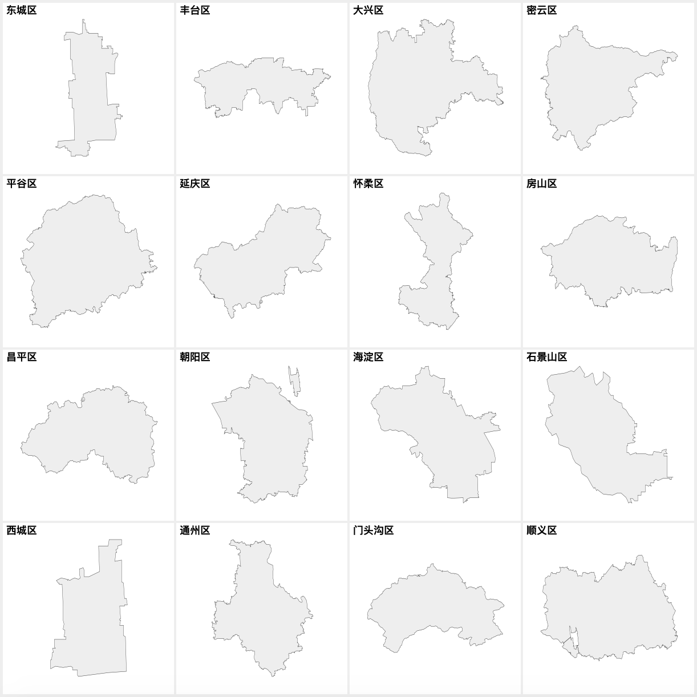

县级地图是从哪里来的
简单地说，县级地图大多是从城市地图拆分而来。拿北京做例子，可以把以下的地图

拆分成以下

理论
geojson，顾名思义，就是还有地理信息的 json (javascript object notation). 我们可以 用标准的 json 编辑器把 geojson 文件打开。以北京为例，把北京地图文件拽到 json 编辑器（比如 json editor online）里.

你会发现，她由 16 个形状组成的。比如第一个叫“东城区”。如果你装了 node.js 的话，我们 可以继续看看所有 16 个区的名字：

实际操作
既然知道是怎么回事了，拆分就比较简单明了了。用 echarts-mapmaker 的 split 命令：
$ split geojson/shape-with-internal-borders/beijing.json $ ls 东城区.geojson 怀柔区.geojson 通州区.geojson 丰台区.geojson 房山区.geojson 顺义区.geojson 大兴区.geojson 昌平区.geojson 石景山区.geojson 密云区.geojson 朝阳区.geojson 门头沟区.geojson 平谷区.geojson 海淀区.geojson 延庆区.geojson 西城区.geojson
后记
2882 个县，岛，区的地图就是这么得来的。